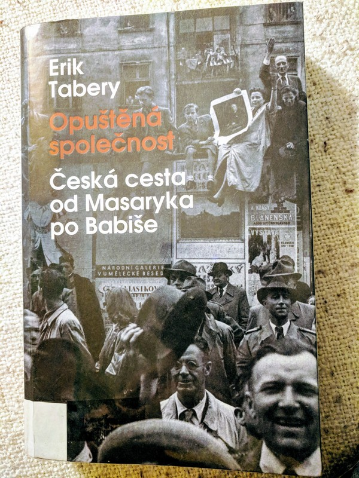
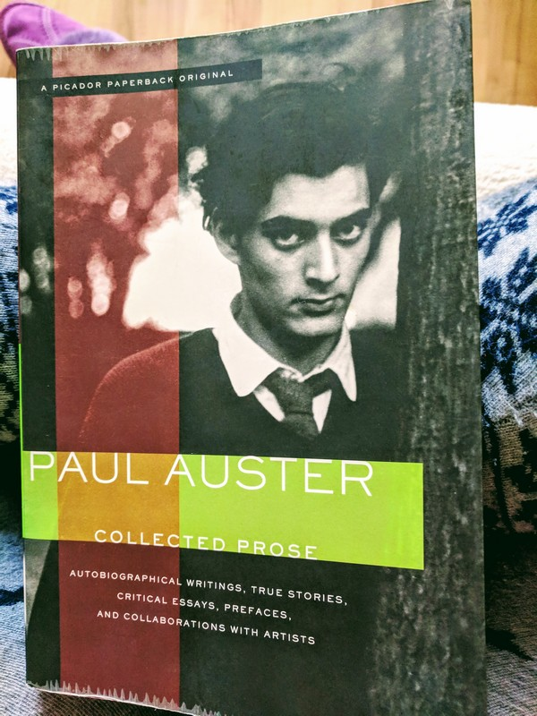

Toto jaro přineslo do mé literární rubriky pouhé dva tituly, ale i tak věřím, že vám třeba budou inspirací při balení čtiva na dovolenou :-)
Erik Tabery - Opuštěná společnost
Čím jsem starší, tím víc mě zajímá naše minulost. Právě v ní je třeba hledat odpovědi na řadu otázek, které nás pálí v současnosti. I to je důvod, proč je tato Taberyho esej v mých očích tak důležitým počinem. A mimo jiné shrnuje všechny důvody, proč jsem před rokem při prezidentských volbách nevhodila do urny hlasovací lístek našemu aktuálnímu prezidentovi…
Když prezident mluví vulgárně, je to stejné zneuctění státu, jako když někdo zapálí ústavu.
Erik Tabery v této skvělé analýze vývoje naší společnosti od první republiky až po současné dny přichází se spoustou trefných postřehů i důležitých politických souvislostí, které náš vývoj směrovaly. Sám autor ji velmi přiléhavě označil za “rozmluvu s minulostí o naší budoucnosti”. A já myslím, že abychom se vyvarovali starých chyb, není od věci čas od času pozvání na takovou rozmluvu přijmout. Lidé, čtěte…

Paul Auster - Collected prose
Některé knížky syslím ve své knihovně roky, než se mi je podaří přečíst. To je i případ tohoto souboru tvorby amerického autora židovského původu, Paula Austera, kterou jsem dostala od bráchy… ehm, k osmnáctinám (což je, přiznejme si, už hodně dávno :-) Bohužel mám u knih v angličtině ten problém, že je pro mě obtížnější se do nich začíst, a tak i tato dlouho čekala na svou chvíli. Austerova angličtina je naštěstí velice dobře “čitelná” a jeho styl psaní poměrně čtivý. Soubor “Collected prose” obsahuje nejen několik jeho autobiografických děl (z nichž mě zaujala především pilotní Invention of solitude, odhalující temnou rodinnou historii), kritických esejí či článků vytvořených k nejrůznějším příležitostem, ale také za mě asi nejzdařilejší kapitolu True stories, obsahující pestrou mozaiku drobných příběhů z každodenního života, v jejichž zachycení podle mě tkví hlavní Austerův talent.
Paul Auster je autor, který pozornosti českého čtenáře k jeho škodě dosud uniká, proto po něm rozhodně neváhejte sáhnout - nemálo jeho knih už bylo přeloženo i do češtiny!
